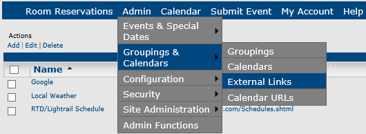
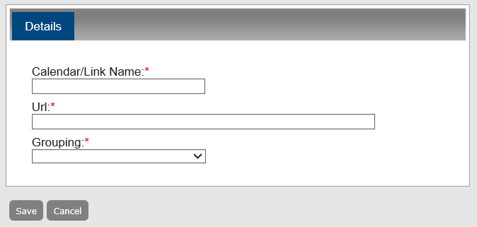

An external link is a link to a website that is outside of Master Calendar. When you associate a link with a calendar grouping, they appear on these calendars for users' convenience. For example, if you have a grouping of calendars for a university’s athletic department, and many of the athletic events take place at the university’s stadium, you might want to associate that grouping with an external link to the university’s website, "About the Stadium." This topic guides you in creating links and editing/deleting existing links.
From the Admin Panel, navigate to Admin > Groupings & Calendars > External Links. The External Links page opens, listing all active external links in Master Calendar.

Under Actions, click Add. A blank Details tab opens, where you can name the external link, specify the URL, and select the calendar grouping to which the link belongs.

Select the link you want to edit.
To Delete one or more links, click the Delete option.
Under Actions, click Edit. The Details tab opens.
To see a history of this link, click the History tab.